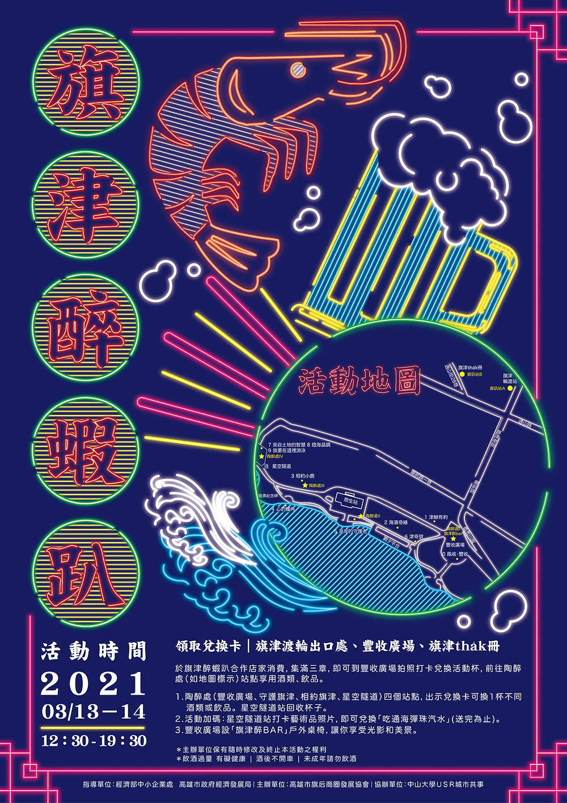

旗津醉蝦趴

享受陽光、沙灘、天后宮、皇阿瑪渡輪還不夠，3月13、14日到「旗津醉蝦趴」，十款地景藝術品配上美酒，海景第一排等你帶人來，旗津美食呷美料，打卡美景換飲料，海岸藝術~乎乾啦！
【旗津醉蝦趴】集點卡送完為止
活動辦法：
1.拿著兌換卡於旗津醉蝦趴合作商店消費，集滿三個店章。
2.前往豐收廣場拍照打卡，兌換活動杯子。
3.前往四個陶醉處兌換酒類或飲品，一站可換一杯，共四杯。
4.終點站星空隧道回收杯子。
領取兌換卡：旗津渡輪出口處、豐收廣場、旗津tha̍k冊
換取活動杯：豐收廣場(旗津海產街底，近海水浴場)
四個陶醉處：豐收廣場、守護旗津、相約旗津、星空隧道(回收杯子)
旗津醉BAR：戶外桌椅，旗津小吃配好酒拍照打卡處
活動加碼：星空隧道站打卡藝術品照片，送「吃通海彈珠汽水」(送完為止)
時間：2021/03/13(六)-3/14(日) 12:30-19:30
主辦單位｜高雄市旗后商圈發展協會
協辦單位｜國立中山大學USR城市是一座共事館
指導單位｜高雄市政府觀光局、經濟部中小企業處、高雄市政府經濟發展局
主辦單位｜高雄市旗后商圈發展協會
協辦單位｜國立中山大學USR城市是一座共事館
指導單位｜高雄市政府觀光局、經濟部中小企業處、高雄市政府經濟發展局